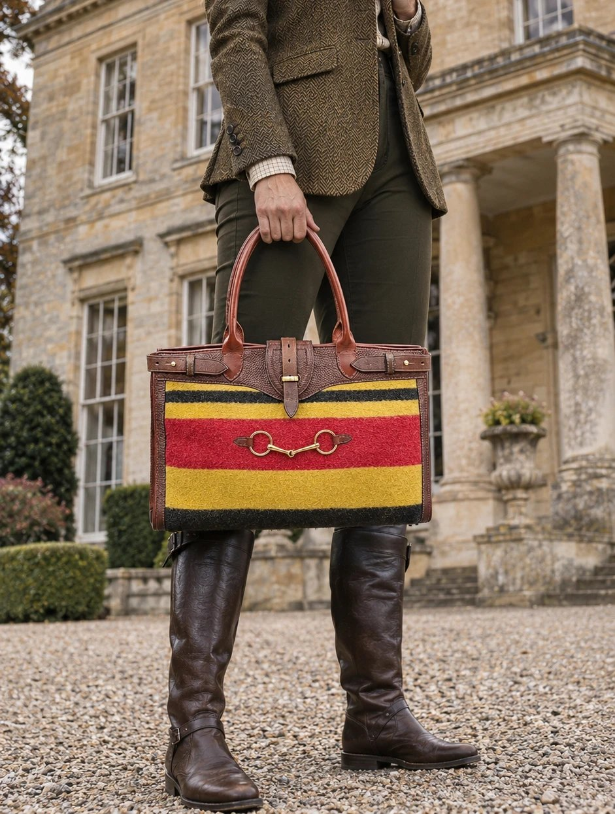

The wool
A dense, soft wool, striped in mustard, red and charcoal after the rugs that warm a thoroughbred on a cold Suffolk morning.
Racing-stripe wool, a gilt horse-bit and stable-yard buckles, framed in rich brown leather.
Named for the royal racing town of Newmarket, and made by hand in the long tradition of the English saddler.


Before first light in Newmarket, the strings are dressed for the gallops: rugs buckled close, tack polished, brass catching the early sun. The Newmarket Bag carries that quiet ritual into the hand.
A soft striped wool in mustard, red and charcoal recalls the stable rug, framed on every side in deep brown pebble-grain leather. A gilt horse-bit crosses the front, and buckled straps, cut and fastened like tack, hold each end. Rolled tan handles are set into stitched leather tabs, and a stamped leather badge on the reverse carries the maker's name.
A dense, soft wool, striped in mustard, red and charcoal after the rugs that warm a thoroughbred on a cold Suffolk morning.
A gilt bit held on leather tabs, the oldest emblem of horsemanship, and the bag's single ornament.
A buckled tab at the centre, and the maker's name pressed into leather on the reverse, as a saddler marks her work.
Trusted with gifts for the Royal Family, and with the interiors of superyachts and five-star hotels.